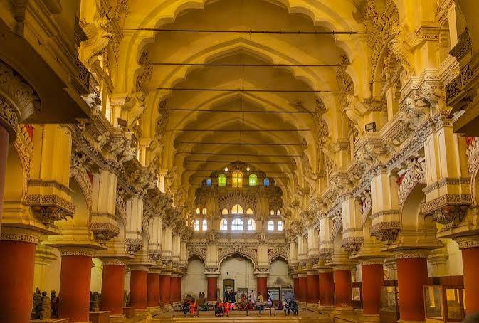
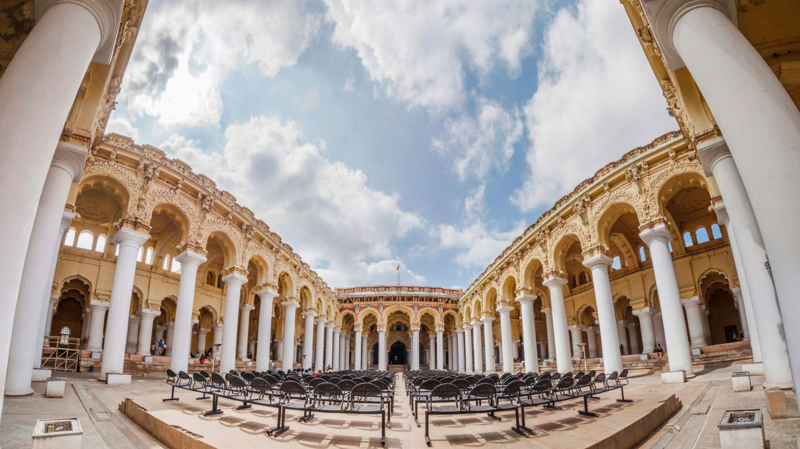
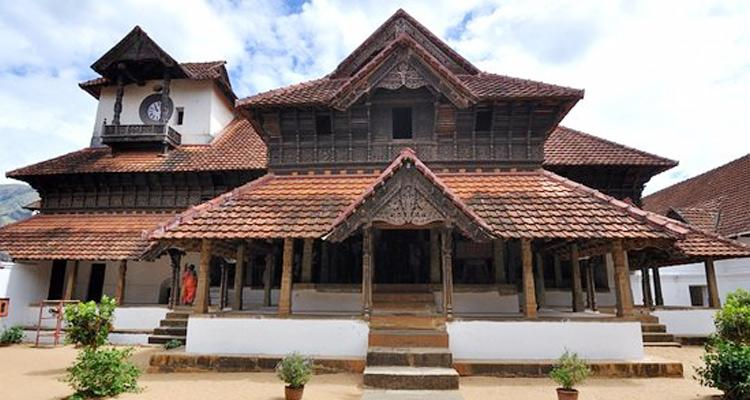
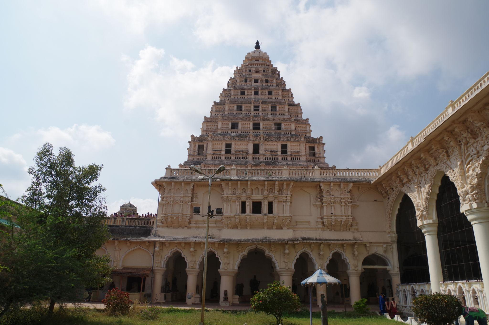
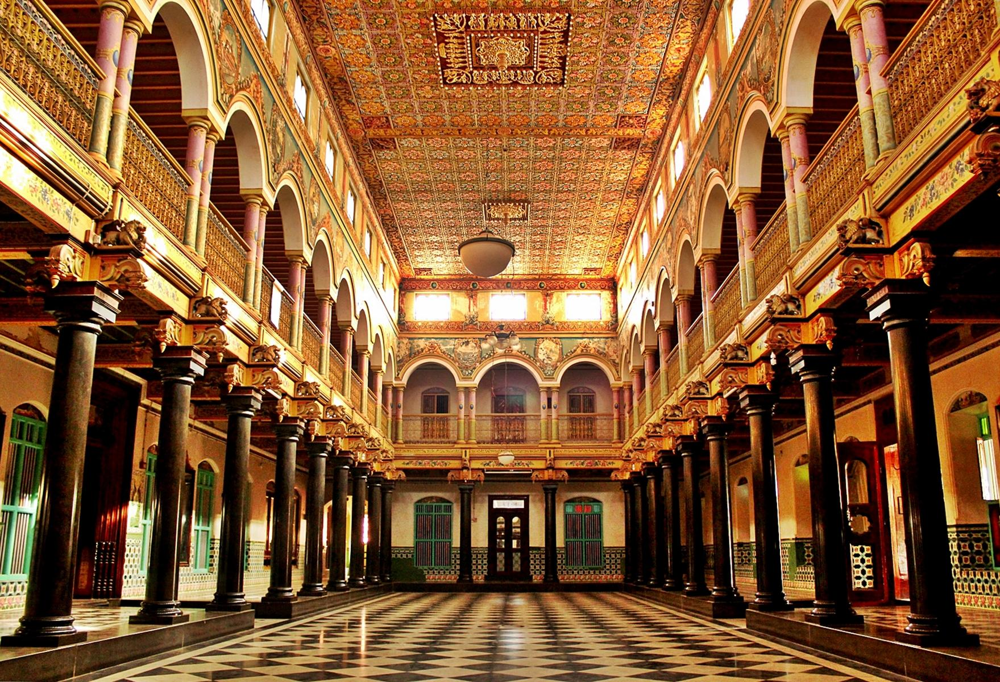
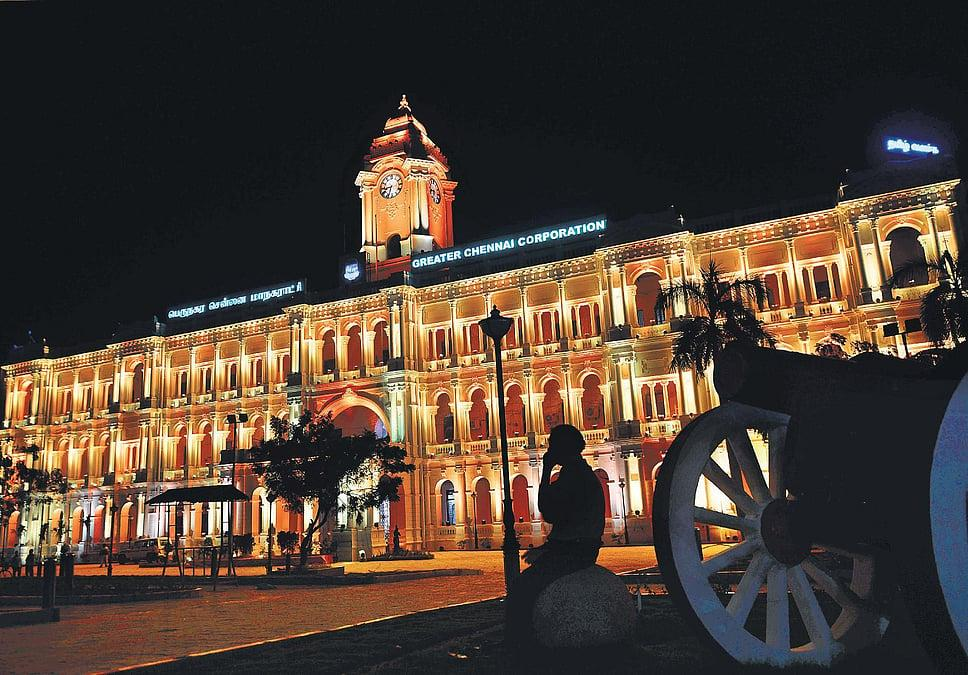

தமிழ்நாடு பிரம்மாண்டமான திராவிடக் கோயில்களுக்கு மட்டுமல்லாமல், பல்வேறு அரச மரபுகளையும் கட்டிடக்கலைச் சிறப்புகளையும் எடுத்துக்காட்டும் வரலாற்றுச் சிறப்புமிக்க அரண்மனைகளுக்கும் புகழ்பெற்றது. நாயக்கர், மராட்டியர், சேதுபதி, ஜமீன்தார் மற்றும் செட்டிநாட்டு மரபுகளுடன் தொடர்புடைய இவ்வரண்மனைகள், அக்கால அரசியல், கலை, பண்பாடு மற்றும் வாழ்க்கை முறையை அறிந்துகொள்ள உதவுகின்றன.

மதுரையில் அமைந்துள்ள திருமலை நாயக்கர் மகால், நாயக்கர் கால கட்டிடக்கலையின் மிகச்சிறந்த எடுத்துக்காட்டுகளில் ஒன்றாகும். இது 1636ஆம் ஆண்டு மன்னர் திருமலை நாயக்கரால் கட்டப்பட்டது.
பிரம்மாண்டமான வெள்ளை நிறத் தூண்கள், உயரமான குவிமாடங்கள் மற்றும் விசாலமான முற்றங்கள் இதன் முக்கிய சிறப்புகளாகும். தற்போதுள்ள பகுதி, அசல் அரண்மனை வளாகத்தின் ஒரு பகுதி மட்டுமே.

கன்னியாகுமரி மாவட்டத்தில் அமைந்துள்ள பத்மநாபபுரம் அரண்மனை, பாரம்பரிய கேரளக் கட்டிடக்கலையின் சிறப்பை வெளிப்படுத்தும் முக்கியமான வரலாற்றுச் சின்னமாகும். இதன் கட்டுமானம் சுமார் 1601ஆம் ஆண்டைச் சேர்ந்ததாகக் கருதப்படுகிறது.
மரத்தால் செய்யப்பட்ட நுணுக்கமான கூரைகள், அலங்கார வேலைப்பாடுகள், மெருகூட்டப்பட்ட கருநிறத் தரைகள் மற்றும் பழமையான கடிகாரக் கோபுரம் ஆகியவை இதன் சிறப்புகளாகும்.

தஞ்சாவூரில் அமைந்துள்ள தஞ்சாவூர் மராட்டிய அரண்மனை, நாயக்கர் மற்றும் மராட்டியர் ஆட்சிக் கால வரலாற்றுடன் தொடர்புடையது. இது முதலில் தஞ்சாவூர் நாயக்கர்களால் உருவாக்கப்பட்டு, பின்னர் மராட்டிய ஆட்சியாளர்களால் மேம்படுத்தப்பட்டது.
இங்கு சர்தார் மஹால், சரஸ்வதி மகால் நூலகம் மற்றும் பல்வேறு வரலாற்றுப் பொருட்கள் காணப்படுகின்றன.

கானாடுகாத்தான் பகுதியில் அமைந்துள்ள செட்டிநாடு அரண்மனைகள், செட்டியார் சமூகத்தின் செழிப்பையும் தனித்துவமான கட்டிடக்கலை மரபையும் வெளிப்படுத்துகின்றன.
பர்மிய தேக்கு மரத் தூண்கள், இத்தாலிய பளிங்குக் கற்கள், வண்ணக் கண்ணாடி வேலைப்பாடுகள் மற்றும் திறந்த முற்றங்கள் ஆகியவை இவற்றின் முக்கிய அம்சங்களாகும்.

சென்னையில் அமைந்துள்ள ரிப்பன் கட்டிடம், பிரிட்டிஷ் காலத்தின் முக்கியமான கட்டிடக்கலைச் சின்னங்களில் ஒன்றாகும். இது 1913ஆம் ஆண்டு திறக்கப்பட்டது.
வெள்ளை நிற வெளிப்புறத் தோற்றம், நியோகிளாசிக்கல் கட்டிடக்கலை மற்றும் அழகிய கடிகாரக் கோபுரம் ஆகியவை இதன் சிறப்புகளாகும். இது சென்னை மாநகராட்சியின் வரலாற்றுடன் நெருங்கிய தொடர்புடையது.
தமிழ்நாட்டின் அரண்மனைகள் ஒரே மாதிரியான கட்டிடக்கலை முறையில் அமைந்தவை அல்ல. அவை கட்டப்பட்ட காலம், ஆட்சி செய்த அரச மரபு மற்றும் உள்ளூர் பண்பாட்டைப் பொறுத்து வெவ்வேறு கட்டிடக்கலை அம்சங்களைக் கொண்டுள்ளன.
நாயக்கர் காலக் கட்டிடக்கலையின் சிறப்பு.
பத்மநாபபுரம் போன்ற அரண்மனைகளில் காணப்படுகின்றன.
அரச வாழ்க்கை, போர்கள் மற்றும் சமயக் காட்சிகளை வெளிப்படுத்துகின்றன.
காற்றோட்டம் மற்றும் சமூக நிகழ்வுகளுக்குப் பயன்படுத்தப்பட்டன.
செட்டிநாட்டு அரண்மனைகளில் குறிப்பிடத்தக்கவை.
பிரிட்டிஷ் கால கட்டிடங்களில் காணப்படும் முக்கிய அம்சங்கள்.
“தமிழ்நாட்டின் அரண்மனைகள் பழைய அரசர்களின் வசிப்பிடங்களாக மட்டுமல்லாமல், ஆட்சி மற்றும் நிர்வாக மையங்களாகவும் செயல்பட்டன. இவற்றின் மூலம் பழைய அரச மரபுகள், கட்டிடக்கலை, ஓவியம், சிற்பம், இலக்கியம் மற்றும் சமூக வாழ்க்கை குறித்து பல தகவல்களை அறிந்துகொள்ள முடிகிறது.”
பிரிட்டிஷ் கால கட்டிடங்களும் தமிழ்நாட்டின் நவீன நிர்வாக மற்றும் நகர்ப்புற வரலாற்றின் முக்கிய பகுதியாக விளங்குகின்றன.
| அரண்மனை / வரலாற்றுக் கட்டிடம் | அமைந்துள்ள இடம் | சிறப்பு |
|---|---|---|
| திருமலை நாயக்கர் மகால் | மதுரை | பிரம்மாண்டமான தூண்கள் மற்றும் குவிமாடங்கள் |
| பத்மநாபபுரம் அரண்மனை | கன்னியாகுமரி | பாரம்பரிய மரக் கட்டிடக்கலை |
| தஞ்சாவூர் மராட்டிய அரண்மனை | தஞ்சாவூர் | மராட்டியர் வரலாறு மற்றும் சரஸ்வதி மகால் |
| செட்டிநாடு அரண்மனை | கானாடுகாத்தான் | தனித்துவமான செட்டிநாட்டு கட்டிடக்கலை |
| ராமலிங்க விலாசம் | ராமநாதபுரம் | சுவர் ஓவியங்கள் மற்றும் சேதுபதி வரலாறு |
| புதுக்கோட்டை அரண்மனை | புதுக்கோட்டை | அரச மரபு மற்றும் வரலாற்றுக் கட்டிடக்கலை |
| எட்டயபுரம் அரண்மனை | எட்டயபுரம் | எட்டப்ப நாயக்கர் அரச மரபு |
| சேத்தூர் அரண்மனை | சேத்தூர் | பழமையான அரச குடும்ப வரலாறு |
| ஊத்துமலை அரண்மனை | ஊத்துமலை | ஜமீன்தார் கால வரலாறு |
| சிவகிரி அரண்மனை | சிவகிரி | ஜமீன்தார் மரபு |
| சிங்கம்பட்டி அரண்மனை | சிங்கம்பட்டி | பழமையான ஜமீன்தார் வரலாறு |
| குற்றாலம் அரண்மனை | குற்றாலம் | அரச மரபு மற்றும் வரலாற்றுக் கட்டிடக்கலை |
| ரிப்பன் கட்டிடம் | சென்னை | பிரிட்டிஷ் கால நியோகிளாசிக்கல் கட்டிடக்கலை |
| பனகல் மாளிகை | சென்னை | காலனித்துவ கால கட்டிடக்கலை |